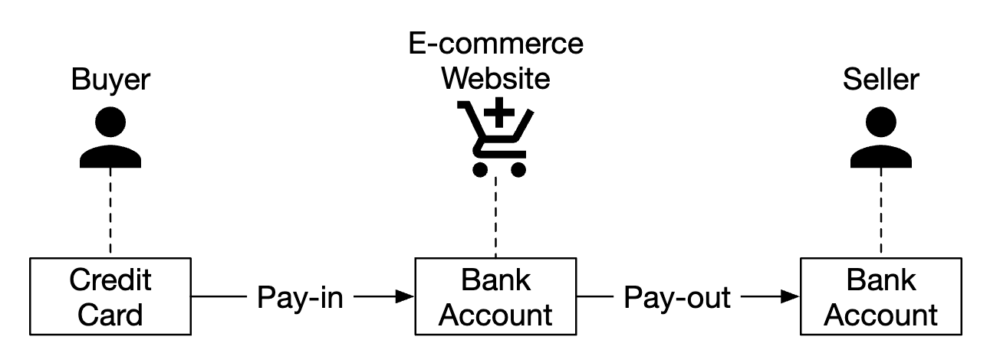
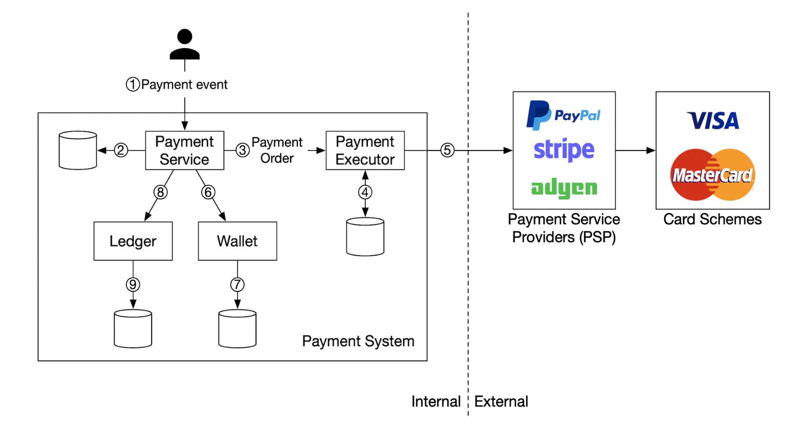
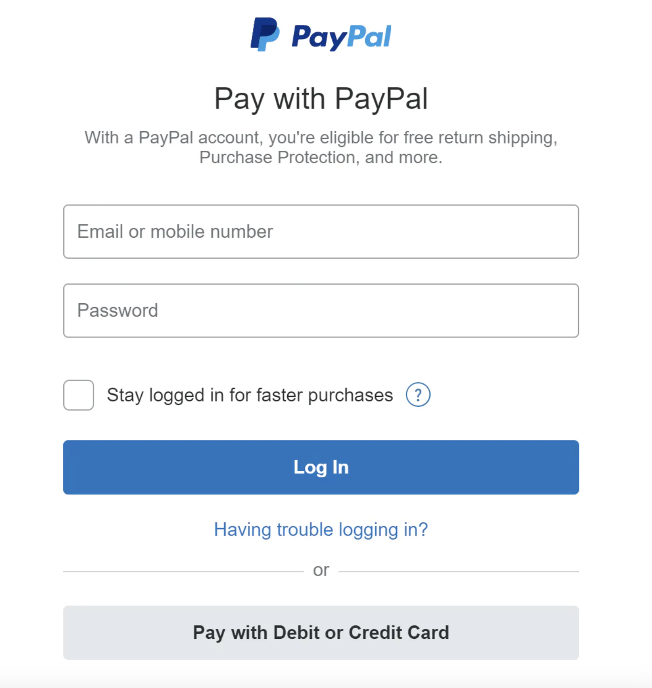
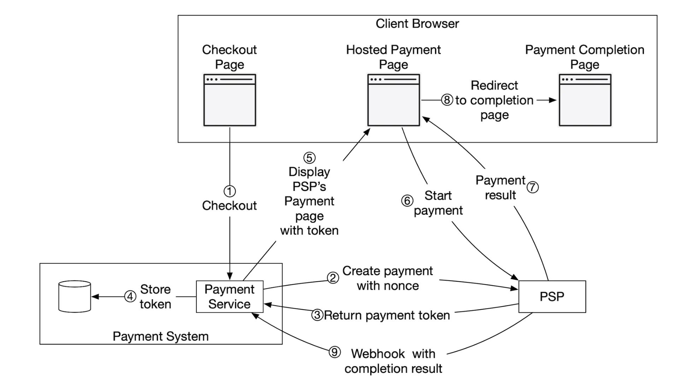
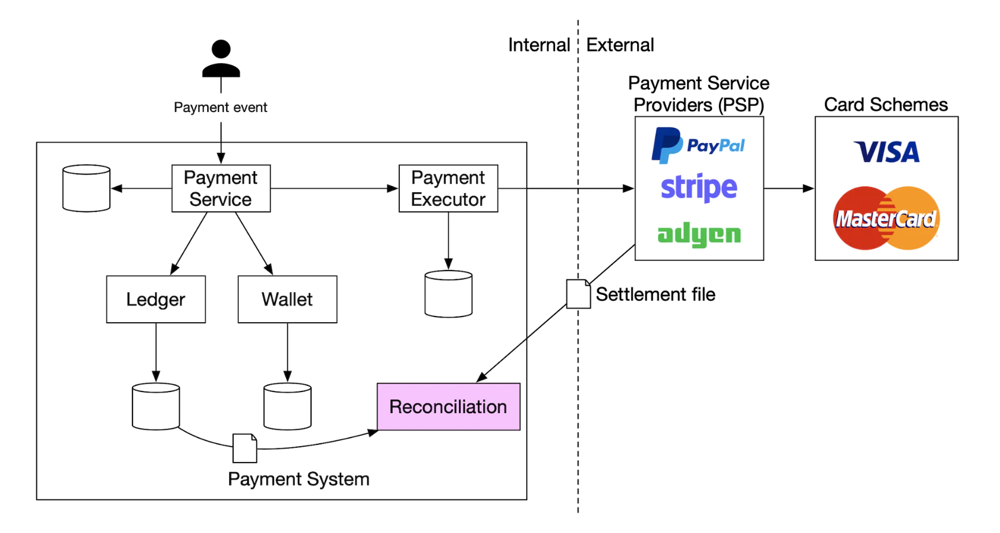
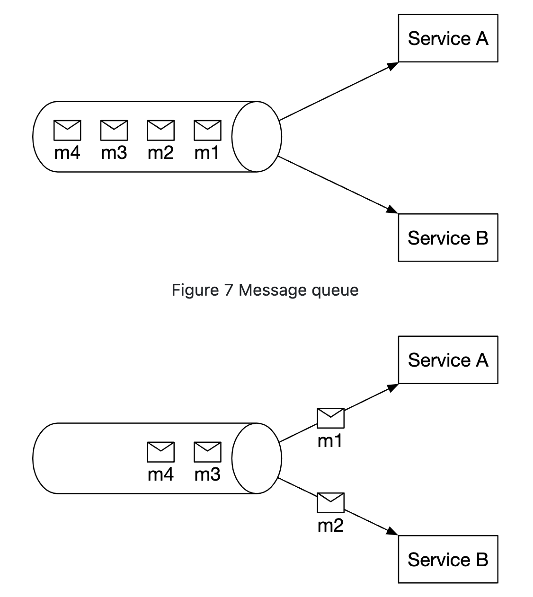
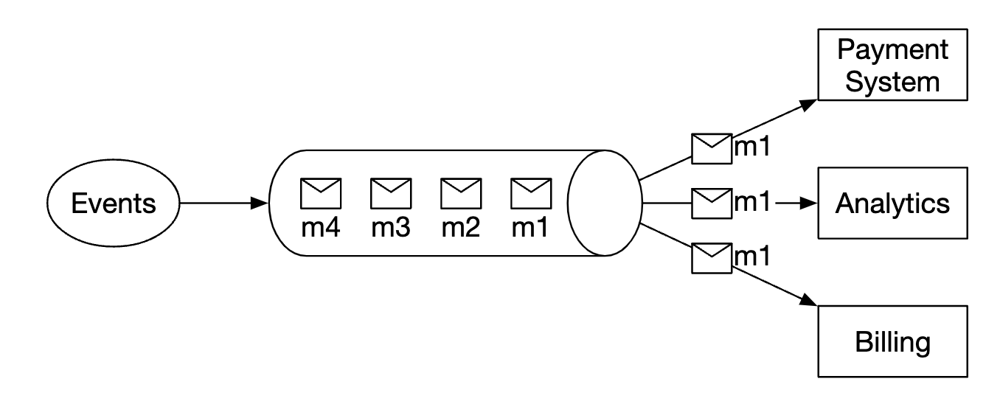
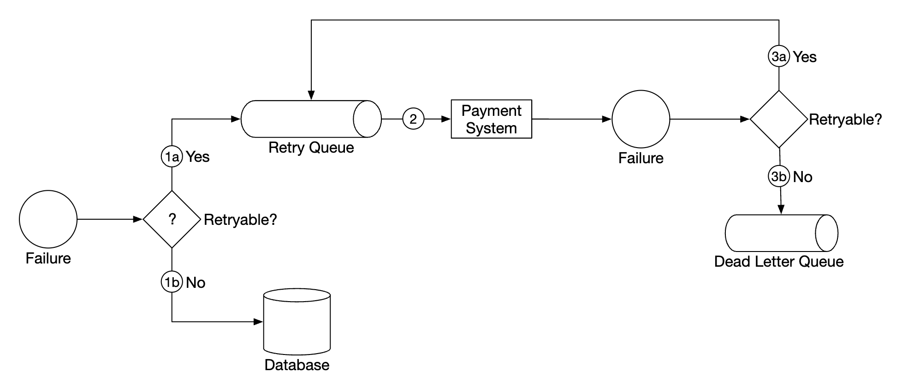
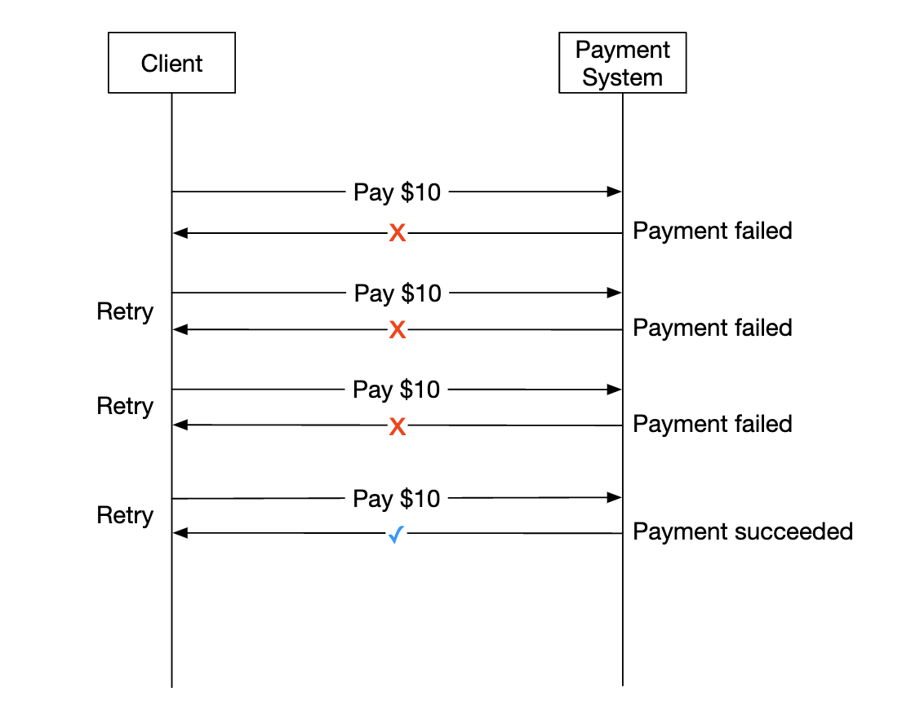
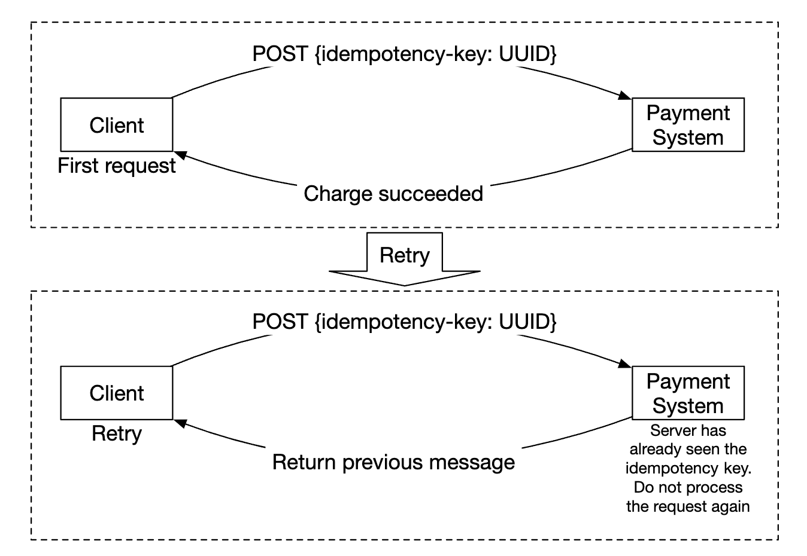

Payment System
Amazon jaise e-commerce ka payment backend — pay-in, pay-out, PSP integration (hosted page + webhooks), double-entry ledger, reconciliation, retries, idempotency aur exactly-once. Aapke Western Union/HSBC background ke liye yeh chapter interview ka "home ground" hai — isliye har section pe production-grade depth.
Introduction
Payment system financial transactions settle karta hai — monetary value ek account se doosre mein. Is chapter ka sabse bada lesson: payments mein throughput problem nahi hai, correctness hai. 10 TPS pe bhi ek double charge ya ek lost payout = customer trust + regulatory issue.
Step 1: Requirements aur scope
- Amazon.com jaisa e-commerce payment backend — saari money movement.
- Real life mein cards, PayPal, bank transfers; interview ke liye credit card.
- Card processing khud nahi — PSP (Stripe, Braintree, Square…).
- Card data hum store nahi karte (compliance).
- Global app, lekin interview mein ek currency.
- 1M transactions/day.
- Pay-out flow bhi (sellers ko monthly).
- Reconciliation internal aur external systems ke beech.
Functional / non-functional
- Pay-in: customers se merchants ki taraf se paisa lena.
- Pay-out: sellers ko duniya bhar mein paisa bhejna.
- Reliability + fault tolerance — failed payments carefully handle.
- Internal ↔ external reconciliation.
Estimation: 1M/day ≈ 10 TPS — kisi bhi DB ke liye trivial. Focus correctness pe.
Step 2: High-level design

Pay-in flow

- Payment service: payment events accept, process coordinate; risk check (AML, fraud) third-party se.
- Payment executor: ek payment order PSP ke through execute (ek event mein multiple orders — multiple sellers).
- PSP: buyer card → platform bank account.
- Card schemes: Visa, Mastercard.
- Ledger: har money movement ka financial record.
- Wallet: merchants ka balance.
API
POST /v1/payments
{
"buyer_info": {...},
"checkout_id": "some_id",
"credit_card_info": {...},
"payment_orders": [{...}, {...}, {...}]
}
// payment_order
{
"seller_account": "SELLER_IBAN",
"amount": "3.15",
"currency": "USD",
"payment_order_id": "globally_unique_payment_id" // PSP ko idempotency key
}
GET /v1/payments/{payment_order_id} // execution status0.1 + 0.2 != 0.3 binary floating point mein. Notes amount ko string rakhte hain (wire format, precision safe). Java mein BigDecimal (aur new BigDecimal("3.15"), kabhi new BigDecimal(3.15) nahi), ya minor units mein long (315 cents). Currency ke minor units ISO 4217 se — JPY ke 0 decimals, USD ke 2, KWD/BHD ke 3. Cross-border mein yeh galti rounding breaks banati hai jo recon mein "unexplained 0.01" ban ke dikhti hai. Rounding mode explicit (HALF_EVEN banker's rounding common) aur kis step pe round karna hai — policy document karo.Data model
Performance nahi, strong consistency. DB choice ke factors: DBA hiring market, bade financial institutions mein proven track record, tooling, aur ACID ke liye traditional SQL.
| payment_events | payment_orders |
|---|---|
checkout_id PKbuyer_infoseller_infocredit_card_info (PSP token)is_payment_done boolean
|
payment_order_id PKbuyer_accountamountcurrencycheckout_id FKpayment_order_status enum (NOT_STARTED, EXECUTING, SUCCESS, FAILED)ledger_updated booleanwallet_updated boolean
|
- Ek event → many orders.
seller_infopay-in mein nahi, pay-out mein chahiye. ledger_updated/wallet_updated— downstream calls ka progress (yeh basically ek saga ka state hai).- Background job in-flight payments monitor karta hai; time pe complete na ho to alert.
NOT_STARTED -> EXECUTING -> SUCCESS
-> FAILED (definitive decline)
-> UNKNOWN (timeout / 5xx / connection reset: PSP ne charge kiya ya nahi, pata nahi!)
UNKNOWN -> (status query with SAME idempotency key | webhook | recon) -> SUCCESS / FAILED
SUCCESS -> REFUND_PENDING -> REFUNDED / PARTIALLY_REFUNDEDUNKNOWN state sabse important hai — interviewers yahi poochte hain: "PSP call timeout ho gaya, ab kya?" Answer: naya charge mat karo. Same idempotency key se retry (PSP duplicate detect karega aur original result dega) ya PSP ka GET status API poll karo; tab tak user ko "pending". Transitions ko DB mein guarded update se: UPDATE payment_orders SET status='SUCCESS' WHERE id=? AND status IN ('EXECUTING','UNKNOWN') — late/duplicate webhook state ko peeche nahi le jaa sakta.Step 2b: Double-entry ledger
Har money movement do accounts pe — ek debit, ek credit, same amount:
| Account | Debit | Credit |
|---|---|---|
| buyer | $1 | |
| seller | $1 |
Saari entries ka sum hamesha zero. End-to-end traceability.
- Immutable, append-only: entry kabhi UPDATE/DELETE nahi. Galti = reversal entry (opposite) + correct entry. Audit trail intact.
- Journal (transaction) + postings:
journal(id, idempotency_key UNIQUE, created_at, description),posting(journal_id, account_id, amount, direction, currency). Invariant: har journal mein Σdebits = Σcredits per currency — DB transaction ke andar enforce. - Realistic pay-in with fee (buyer $100, platform fee 3%):
Dr PSP_Receivable 100.00 (PSP humein dega) Cr Merchant_Payable(S1) 97.00 (seller ka paisa, platform pe liability) Cr Fee_Revenue 3.00 -- settlement day, PSP bank mein bhejta hai (PSP fee 2.10 kaat ke): Dr Bank_Cash 97.90 Dr PSP_Fee_Expense 2.10 Cr PSP_Receivable 100.00 -- pay-out to seller: Dr Merchant_Payable(S1) 97.00 Cr Bank_Cash 97.00 - Balance = derived: Σpostings per account. Performance ke liye balance snapshot/materialized table jo same transaction mein update ho, lekin truth postings hain.
- Multi-currency (aapka FX background): har currency alag balance karti hai. USD→EUR conversion ke liye FX "position" accounts:
Dr Customer_USD 100 / Cr FX_Position_USD 100aurDr FX_Position_EUR 92 / Cr Beneficiary_EUR 92; rate + quote id journal pe store. FX P&L in position accounts ke revaluation se nikalta hai.
Hosted payment page

Card data store karne ke heavy regulations (PCI DSS) se bachne ke liye companies PSP ka widget/hosted page use karti hain.
Pay-out flow
- Paisa platform ke bank account se merchant ke bank account mein.
- Third-party accounts-payable provider (e.g. Tipalti) use kar sakte hain.
- Bookkeeping + regulatory requirements bahut (KYC/KYB, sanctions screening, tax reporting).
Step 3a: PSP integration
Banks/card schemes se direct connection rare hai (sirf bahut badi companies). Normal: PSP via (a) API (agar hum card data collect karte hain — PCI scope bada) ya (b) hosted payment page.

- User "checkout" → client payment service ko order info bhejta hai.
- Payment service PSP ko payment registration (amount, currency, expiry + idempotency UUID, usually payment_order_id).
- PSP token deta hai → DB mein.
- User ko PSP-hosted page, token + success/failure redirect URL ke saath.
- User details bharta hai, PSP process karta hai.
- Redirect back, example: https://your-company.com/?tokenID=JIOUIQ123NSF&payResult=X324FSa — yeh sirf illustrative URL hai (real site nahi):
tokenID= registration token jisse hum apna order dhoondhte hain,payResult= PSP ka result reference. Ise kabhi final truth mat maano — user URL edit kar sakta hai; final status webhook/PSP API se verify karo. Detail: links guide. - Async webhook PSP → payment service; result record.
- Signature verify (e.g. Stripe
Stripe-Signatureheader — HMAC-SHA256 with timestamp; tolerance window se replay attack rokna). - Jaldi 2xx do, processing async (Kafka) — warna PSP timeout maan ke retry karega.
- At-least-once + out-of-order: PSPs retry karte hain aur order guarantee nahi. Event id pe dedupe table, aur guarded state transitions (SUCCESS ke baad late "processing" event ignore).
- Webhook miss ho sakta hai → poller jo UNKNOWN/EXECUTING orders ko N minute baad PSP API se check kare. Webhook + polling + nightly recon = teen layers.
Step 3b: Reconciliation
Happy path upar tha; unhappy paths ko background reconciliation pakadta hai. Har raat PSP settlement file bhejta hai; hum usse apne internal state se compare karte hain.

Mismatches finance team handle karti hai, teen buckets mein:
- Classifiable + automatable — known type, standard procedure se auto-adjust.
- Classifiable, automate nahi ho sakta — finance manually adjust.
- Unclassifiable — manual investigation.
- Three-way recon: (1) internal ledger vs (2) PSP settlement report vs (3) bank statement (SWIFT MT940 / ISO 20022 camt.053). PSP bolta hai "97.90 bheja", bank bolta hai "aaya" — dono check.
- Matching keys: PSP reference ↔ payment_order_id (isliye apna id PSP ko metadata/merchant reference mein bhejo). Fallback fuzzy match: amount + date + last4.
- Break types: missing internal (PSP ne charge kiya, humare paas FAILED/UNKNOWN → auto-fix ya refund), missing external (humne SUCCESS mana, PSP ke paas nahi → investigate), amount mismatch (fees, FX rounding, partial capture), timing (T+1/T+2 settlement — next day auto-clear).
- Ageing & SLA: breaks ko age ke saath escalate; month-end close se pehle zero unexplained.
- Recon output khud ledger entries banata hai (adjustments) — wahi double-entry rules.
Step 3c: Processing delays
Kabhi payment ghanton leti hai: high-risk flag → manual review, ya 3D Secure jaisa extra authentication. Handling:
- PSP ke webhook ka wait, ya webhook na ho to polling.
- User ko "pending" status + status page; complete hone pe email.
Step 3d: Internal communication — sync vs async
Sync (HTTP) chhote scale pe theek, lekin: long call chain = low performance, poor failure isolation (PSP down = user ko response nahi), tight coupling, traffic spike ke liye buffer nahi.


Sync simple hai lekin services autonomous nahi; async simplicity aur immediate consistency ke badle scalability + resilience deta hai.
payment-events, key = checkout_id ya payment_order_id taaki ek payment ke events ordered rahein. Producer side: DB write + event publish ka dual-write problem → Transactional Outbox (same DB txn mein outbox row, Debezium CDC se Kafka). Consumer side (ledger, wallet, notification groups): at-least-once + idempotent consumer (processed_event table). Kafka EOS (transactions) sirf Kafka-to-Kafka hai; PSP call ya ledger DB write ke liye "effectively-once" = idempotency. Config: acks=all, min.insync.replicas=2, RF=3, enable.idempotence=true.Step 3e: Failed payments
- State tracking — fail pe state dekh ke retry ya refund decide.
- Retry queue — retryable failures.
- Dead-letter queue — terminal failures, debug/inspect ke liye.

| Retryable | Non-retryable (terminal) |
|---|---|
| Timeout, 5xx, 429 (rate limit), connection reset, PSP maintenance | Card declined, insufficient funds, invalid card, fraud block, 4xx validation |
Step 3f: Exactly-once — at-least-once + at-most-once
Exactly-once = at-least-once (retry) + at-most-once (idempotency) saath mein.

Retry strategies: immediate, fixed interval, incremental, exponential backoff (default), cancel (terminal error/limit). Server Retry-After header se interval suggest kare. Jitter add karo taaki saare clients ek saath retry na karein (thundering herd).
Retry ka khatra — double processing:
- User ne "Pay" do baar click kiya.
- PSP ne charge kar diya, lekin downstream (ledger/wallet) fail; retry ne PSP ko phir charge karwa diya.

POST {idempotency-key: UUID} → "Charge succeeded". Retry (neeche): same key ke saath POST → Payment System "Server has already seen the idempotency key. Do not process the request again" → "Return previous message". Dusri baar charge nahi, pehla response replay.Implementation: unique key constraint — insert try karo, violation pe existing object return karo. PSP side bhi same nonce/idempotency key pe duplicate process nahi karta.
// Spring Boot: idempotent POST /v1/payments
@Transactional
public PaymentResponse pay(String idemKey, PaymentRequest req) {
String hash = sha256(canonicalJson(req));
Optional<IdemRecord> existing = idemRepo.findForUpdate(idemKey); // row lock
if (existing.isPresent()) {
IdemRecord r = existing.get();
if (!r.requestHash().equals(hash)) throw new IdempotencyConflict(); // 422: same key, different body
if (r.status() == IN_PROGRESS) throw new RetryLater(); // 409 + Retry-After
return r.storedResponse(); // replay
}
idemRepo.insert(idemKey, hash, IN_PROGRESS); // UNIQUE(idem_key) guards races
PaymentOrder po = orders.create(req); // NOT_STARTED
// PSP call ideally outside this DB txn (don't hold locks during network I/O):
// publish via outbox -> executor calls PSP with po.id as PSP idempotency key
return idemRepo.complete(idemKey, PaymentResponse.accepted(po.id()));
}Step 3g: Consistency
Stateful services: PSP, ledger, wallet, payment service. Koi bhi do ke beech call fail ho sakti hai → exactly-once processing + reconciliation se eventual consistency.
Replication lag (primary vs replica) se user inconsistent data dekh sakta hai. Mitigation: reads + writes primary se, replicas sirf redundancy/failover ke liye; ya consensus (Paxos/Raft) se replicas in-sync; ya consensus-based distributed DB — YugabyteDB, CockroachDB.
ledger_updated, wallet_updated flags ke saath track karna ek orchestrated saga hai. Better: ek hi "PSP success" event se ledger aur wallet dono idempotently update; aur ledger-wallet internal recon (wallet balance == Σledger postings for merchant account) daily chalao.Step 3h: Payment security
| Threat | Mitigation |
|---|---|
| Eavesdropping | HTTPS everywhere (mTLS internally) |
| Data tampering | Encryption + integrity monitoring |
| MITM | SSL/TLS with certificate pinning (mobile) |
| Data loss | Multi-region replication + snapshots |
| DDoS | Rate limiting + firewall/WAF |
| Card theft | Tokenisation — real PAN store nahi |
| PCI compliance | PCI DSS — branded cards handle karne walon ke liye standard |
| Fraud | Address verification (AVS), CVV, user behaviour analysis, velocity checks |
Step 4: Wrap up
- Monitoring & alerting (payment success rate, PSP error rates, stuck-in-UNKNOWN count, recon break count).
- Debugging tools — payment kyun fail hua, ek click mein timeline.
- Currency exchange — international ke liye zaroori.
- Geography — har region ke alag payment methods.
- Cash payments — India, Brazil mein common.
- Google/Apple Pay integration.
quote_id, expiry e.g. 30s-15min); payment request quote_id reference kare, server expiry + rate verify kare (client rate pe trust nahi). Rate source + timestamp ledger journal pe store (audit). Settlement currency vs presentment currency alag ho sakti hai. Sanctions/AML screening (OFAC lists) pay-out se pehle. Corridor-wise payout partners (local rails: UPI, SEPA Instant, FedNow) aur har partner ka apna recon file.- 0-5: Scope — PSP use, card data nahi, 10 TPS, pay-in + pay-out + recon. Opening line (upar) bolo.
- 5-15: Pay-in diagram (service, executor, PSP, ledger, wallet), API (string/BigDecimal amount, payment_order_id as idempotency key), tables.
- 15-25: Hosted page + webhook flow, state machine incl. UNKNOWN.
- 25-35: Exactly-once = retry + idempotency (har hop pe), retry vs DLQ classification, Kafka + outbox.
- 35-42: Double-entry ledger example with fees, reconciliation (three-way, break buckets).
- 42-45: Security/PCI, FX, monitoring.
Follow-up questions
- Q: PSP ne charge kar diya lekin hamara service crash ho gaya response save karne se pehle?
- Order EXECUTING/UNKNOWN mein atka; poller same idempotency key se PSP status query karega ya webhook aayega; nightly recon last safety net. User ko naya charge kabhi nahi.
- Q: Refund flow?
- Naya refund order (apna idempotency key), PSP refund API, ledger mein reversal-style entries (Dr Merchant_Payable / Cr PSP_Receivable), partial refunds sum ≤ captured amount guarded update se.
- Q: Auth vs capture?
- Auth = funds hold (order place pe), capture = actual charge (ship hone pe). Auth expire hota hai (card network rules, typically days), isliye capture scheduler + expiry monitoring.
- Q: Ledger DB scale kaise?
- 10 TPS pe single Postgres. Bade scale pe shard by account, hot accounts (platform fee account) ke liye sub-accounts/batching; ya TigerBeetle jaise purpose-built ledger DB.
- Q: Chargeback?
- PSP webhook (dispute.created) → ledger entry (funds held/debited from merchant payable), evidence submission workflow, outcome pe reversal.
Key Takeaways
- Payments = correctness problem, scale nahi (10 TPS).
- Money: string on wire, BigDecimal/minor-units in code, currency-specific decimals, explicit rounding.
- Hosted payment page + token + webhook = PCI scope minimum; redirect URL pe trust nahi, webhook/API se verify.
- State machine mein UNKNOWN state; timeout pe naya charge nahi, same key se status check.
- Exactly-once = retries (exponential backoff + jitter) + idempotency keys har hop pe + DLQ for terminal.
- Double-entry, immutable, append-only ledger; balances derived; reversals for corrections.
- Reconciliation (PSP settlement + bank statement + internal) last line of defence; breaks classify karo.
- Async via Kafka + outbox; consumers idempotent.